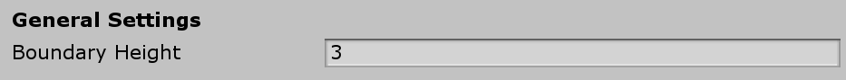
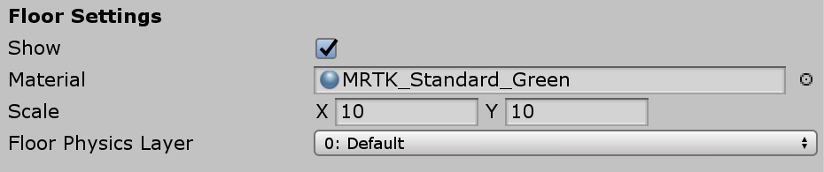
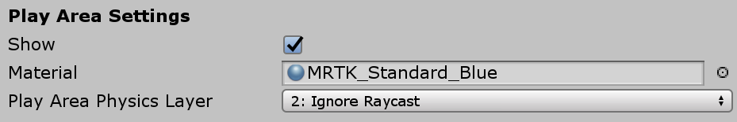
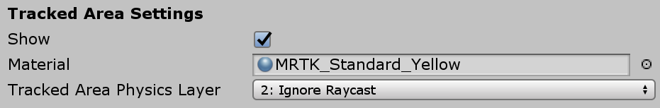
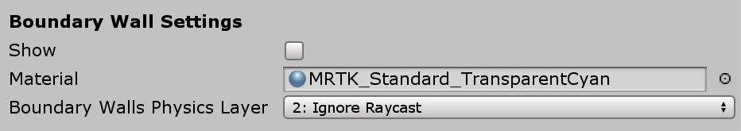
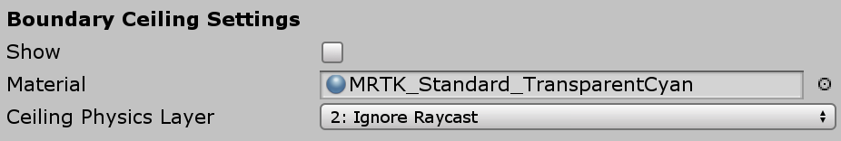

配置边界可视化
边界可视化配置文件(Boundary Visualization Profile ) 提供了用于为边界系统配置视觉美感和其他相关参数的选项。边界可视化效果将附加到场景中的“混合现实游戏空间（Mixed Reality Playspace object）”对象，并与用户一起传送。
General Settings (通用设置)

Boundary Height (边界高度)
边界高度指示地面上方应渲染的边界上限与地面的距离。默认值为3米。
Floor Settings (地面设置)

Show
指示是否要创建地板平面并将其添加到场景。默认值是true。
Material
指示创建地板平面时应使用的材质。
Scale
指示要创建的地板平面的大小（以米为单位）。默认比例为3米 x 3米见方。
Physics Layer
应该在其上设置地板平面的图层。默认值为default层。
Play Area Settings (游戏区域设置)

Show
指示是否创建了游戏区域矩形并将其添加到场景中。默认值是true。
Material
指示在创建游戏区域对象时应使用的材质。
Physics Layer
应当在其上设置游戏区域的图层。默认值为*忽略射线（Ignore Raycast）*层。
Tracked Area Settings (跟踪区域设置 )

Show
指示是否创建跟踪区域的轮廓并将其添加到场景中。默认值是true。
Material
指示在创建跟踪区域轮廓时应使用的材质。
Physics Layer
应当在其上设置跟踪区域的图层。默认值为Ignore Raycast层。
Boundary Wall Settings (边界墙设置)

Show
指示是否要创建边界墙平面并将其添加到场景。默认值为false。
Material
指示在创建边界墙平面时应使用的材质。
Physics Layer
应在其上设置边界墙的图层。默认值为Ignore Raycast层。
[!注意] 将边界墙组件设置为Ignore Raycast以外的物理层可能会阻止用户与场景中的对象进行交互。
Boundary Ceiling Settings (边界顶端设置)

Show
指示是否要创建边界顶端平面并将其添加到场景。默认值为false。
Material
指示在创建边界顶端平面时应使用的材质。
Physics Layer
应在其上设置边界墙的图层。默认值为Ignore Raycast层。
[!注意] 将边界顶端组件设置为Ignore Raycast以外的物理层可能会阻止用户与场景中的对象进行交互。